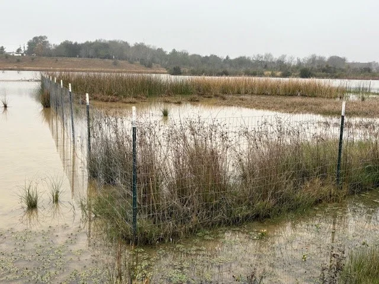

Why Are There Fences in the Water?

Walk the trail along the northern lakes and you will see something that looks out of place: low wire fences standing in the shallows, enclosing patches of reeds and grasses. They are not there to keep people out. They are there to keep fish away from plants.
The plants inside those enclosures are native emergent vegetation, the bulrushes, spikerushes and sedges that grow with their roots underwater and their stems in the air. They are doing more work than they appear to be. Their roots hold the shoreline together. Their stems slow the water and drop out sediment. They shelter young fish, feed waterfowl, and give dragonflies somewhere to emerge. A lake edge with emergent vegetation supports many times the life of a bare one.
The trouble is that some of the fish in the lakes eat those plants faster than they can establish. Vegetation-feeding fish will crop new growth down to nothing before the roots ever take hold. On a young lake, that is the difference between a restored shoreline and a muddy bank.
So the Harris County Flood Control District and the Conservancy tried something straightforward. Fence off sections of shallow water, plant them, and let the vegetation get established behind the wire where the fish cannot reach it. Once a stand is strong enough to survive grazing, the enclosure comes down and the plants spread on their own.
It is an experiment, and it is being run in the open where anyone walking past can watch it. Some enclosures do better than others. Water depth matters, and so does how much sun a spot gets and what was already growing there. The ones that take hold become seed sources for the rest of the shoreline.
If you visit the same enclosure across a year, you can watch it happen. Bare water in winter, green shoots by spring, a thick stand by late summer.
It is one of the few places in the Greenway where restoration is visible at the speed of a season rather than a decade. It is also temporary by design. The fences are a means, not a feature. When they come down, that is the project working.